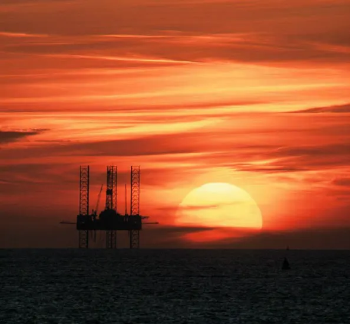
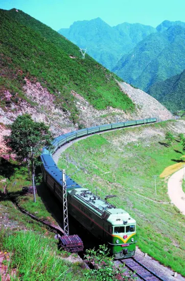

К оглавлениюОбщий обзор Китая
Оригинал · с. 2–3Географическое положение Китая
Китай обращён к морю на востоке и связан сухопутными границами с внутренней Азией на западе. Авторы ведут читателя вдоль берега от устья Ялуцзян до границы с Вьетнамом. По пути сменяются Бохайское, Жёлтое, Восточно-Китайское и Южно-Китайское моря.
Оригинал · с. 4–7Территория Китая
Масштаб страны авторы передают двумя сопоставлениями. Пока в Мохэ стоит зима, на Хайнане цветут растения; когда восточные рыбаки выходят на рассвете в море, на Памире ещё спят. Карта и таблица переводят эти расстояния на язык административного деления: регион, его сокращение и административный центр.
Оригинал · с. 8–9Население Китая
По переписи 2000 года в стране насчитывалось около 1,295 млрд жителей. Карта показывает, почему средняя плотность мало говорит об отдельной местности: восточные равнины заселены значительно гуще западных гор и нагорий. Соотношение сельских и городских жителей здесь относится к периоду издания.
Оригинал · с. 10–11Народы Китая
Книга знакомит с принятым в Китае делением на 56 национальностей. Ханьцы составляют большинство; многие другие народы живут на обширных территориях северо-запада, юго-запада и северо-востока. Поэтому небольшая доля в населении страны может сочетаться с заметным присутствием на её карте.
 Из книги · с. 10
Из книги · с. 10 Из книги · с. 11Из книги · с. 11Из книги · с. 11
Из книги · с. 11Из книги · с. 11Из книги · с. 11Рельеф Китая
Если мысленно пересечь Китай с запада на восток, получится спуск по трём ступеням. Сначала идёт Цинхай-Тибетское нагорье, затем более низкие нагорья и впадины, наконец восточные равнины и холмы. Крупные реки используют этот уклон, а в местах резкого падения русла особенно велики возможности гидроэнергетики.
Оригинал · с. 14–15Климат Китая
Климатическая карта разделяет страну на муссонный восток, сухой северо-запад и высокогорный Цинхай-Тибетский район. На востоке летняя жара совпадает с сезоном дождей, что удобно для земледелия. Зимой разница севера и юга особенно наглядна: Харбин устраивает праздник ледовых скульптур, пока в Гуанчжоу цветут растения.
 Из книги · с. 14
Из книги · с. 14 Из книги · с. 14
Из книги · с. 14 Из книги · с. 15
Из книги · с. 15Экономика Китая
Авторы связывают экономические перемены с реформами и открытием страны после 1978 года. На побережье предприятия опирались на порты, транспорт и связь; внутренние районы вступали в преобразования с другими возможностями. Показатели производства характеризуют экономику начала XXI века.
 Из книги · с. 16
Из книги · с. 16 Из книги · с. 17
Из книги · с. 17Сельское хозяйство
Линия Циньлинь — Хуайхэ объясняет различия в земледелии: севернее больше богарных полей пшеницы, кукурузы и сои, южнее существенную роль играет заливной рис. На склонах Юньнани террасы превращают горный рельеф в пригодные для полива площадки.
Оригинал · с. 21–22Промышленность
Промышленная карта складывалась неравномерно. В Ляонине сформировался тяжёлый промышленный район; вокруг Пекина, Тяньцзиня и Таншаня — комплекс разных отраслей. Ещё два пояса авторы выделяют в дельтах Янцзы и Чжуцзяна, где предприятия тяготеют к крупным городам и портам.
Из книги · с. 21
Из книги · с. 22Из книги · с. 22 К оглавлениюРесурсы и окружающая среда
Оригинал · с. 24–25Ресурсы полезных ископаемых
Запасы угля, нефти и цветных металлов разнесены по разным районам. Авторы сопоставляют северо-восточный Дацин с нефтяными месторождениями Карамая и Таримской впадины на западе. Большие суммарные запасы страны ещё не означают высокой обеспеченности ресурсами на одного жителя.
Из книги · с. 24 Из книги · с. 25
Из книги · с. 25 Оригинал · с. 26–30Животный мир
Животный мир показан через виды с разными местообитаниями: большую панду, золотистую обезьяну, японского журавля, китайского аллигатора и дикого двугорбого верблюда. Для сохранения такого разнообразия нужны и горные леса, и водно-болотные угодья, и пустыни.
Оригинал · с. 31–32Растительный мир
Смена широт и высот позволяет соседствовать очень разным растительным сообществам. Среди деревьев авторы выделяют метасеквойю, гинкго и катайю как древние сохранившиеся линии. Знакомые образы бамбука, сосен и кипарисов таким образом получают ботанический контекст.
 Из книги · с. 31
Из книги · с. 31 Из книги · с. 31
Из книги · с. 31 Из книги · с. 32
Из книги · с. 32Водные ресурсы
Реки, озёра и высокогорные ледники образуют разные запасы пресной воды. Юго-восток получает гораздо больше стока, чем засушливый внутренний запад. Чтобы оценить обеспеченность водой, приходится одновременно учитывать население, район и сезон.
Оригинал · с. 35–36Охрана окружающей среды
На примере защитных лесополос на севере книга показывает, как растительность помогает удерживать почву и сдерживать пески. Другой инструмент — заповедники, где сохраняется целая среда обитания. Обе меры авторы рассматривают на фоне быстрого промышленного развития.
К оглавлениюТранспорт и ирригация
Транспорт
Оригинал · с. 38–41Железные дороги
Железнодорожную сеть удобно читать как пересечение магистралей север — юг и запад — восток. В точках пересечения, среди которых Пекин и Ухань, возникают узлы пересадки и перегрузки. Отдельно книга фиксирует ранний этап ускорения пассажирского сообщения.

Из книги · с. 38 Из книги · с. 39Из книги · с. 40Из книги · с. 41
Из книги · с. 39Из книги · с. 40Из книги · с. 41Автодороги
Автодороги связывают населённые пункты, куда железная дорога не доходит. Авторы различают расширение обычной дорожной сети до уездов и строительство скоростных трасс между крупными городами, начавшееся значительно позднее.
Оригинал · с. 44–45Авиасообщение
Воздушные маршруты сокращают время между удалёнными городами и связывают внутреннюю сеть с международными направлениями. Пекин, Шанхай, Гуанчжоу и Гонконг в книге выступают как крупные узлы этих связей.
 Из книги · с. 44
Из книги · с. 44 Из книги · с. 44Из книги · с. 45Из книги · с. 45
Из книги · с. 44Из книги · с. 45Из книги · с. 45Судоходство
У судоходства страны две географии: морское побережье и внутренние водные пути. Янцзы образует длинную судоходную ось от Сычуани к морю, а Великий канал даёт ей связь с северным направлением. Морскую традицию авторы иллюстрируют плаваниями Чжэн Хэ.
 Из книги · с. 46
Из книги · с. 46 Из книги · с. 46
Из книги · с. 46 Из книги · с. 47
Из книги · с. 47Ирригация
Оригинал · с. 48–49Гидроузел «Три ущелья»
У Саньдоупина возле Ичана плотина «Три ущелья» решает сразу несколько задач. Водохранилище помогает регулировать паводки Янцзы, перепад высот используется для выработки электричества, судоходные сооружения позволяют преодолевать плотину. Проект описан на стадии строительства.
Оригинал · с. 50–51Гидроузел Сяоланди
На Хуанхэ гидроузел Сяоланди должен управляться не только с паводочной водой, но и с огромным количеством наносов. Регулирование стока и переноса ила особенно важно ниже по течению, где русло проходит по густонаселённой равнине.
Оригинал · с. 52–54Переброска воды с юга на север
Проект переброски воды отвечает на несоответствие между влажным югом и потребностями засушливого севера. Авторы разбирают восточное, центральное и западное направления. Восточный путь использует участки Великого канала, в то время как для остальных трасс иные рельеф и инженерные условия.
К оглавлениюЛандшафт Китая
Горы
Оригинал · с. 56–57Гималайские горы
Гималаи образуют южный край Цинхай-Тибетского нагорья. Это система почти параллельных хребтов; высочайшие вершины, включая Джомолунгму, относятся к главному из них. Снег и ледники высокогорья дают начало потокам, уходящим в глубокие долины.
Оригинал · с. 58–59Горы Циньлинь
Циньлинь в центральном Китае разделяет бассейны Хуанхэ и Янцзы. Зимой хребет ослабляет холодные ветры, летом задерживает часть влаги, идущей с юго-востока. На примере Тайбайшаня и крутых гранитных вершин Хуашаня авторы показывают, как по-разному выглядит одна горная система.
Оригинал · с. 60–61Горы Чанбайшань
На юго-востоке Цзилини вулканическое происхождение Чанбайшаня видно по озеру Тяньчи: вода заполнила кратер, окружённый крутыми стенами. От лесистых предгорий к вершине меняются растительность и климат. Эти высотные пояса объясняют разнообразие природных ресурсов района.
Оригинал · с. 62–63Горы Тяньшань
Тяньшань разделяет Синьцзян на северную и южную части. У снежных вершин и ледников берут начало потоки, которые ниже питают пастбища и оазисы. В пределах одного горного района встречаются ледовые, лесные и засушливые ландшафты.
 Из книги · с. 62
Из книги · с. 62 Из книги · с. 63
Из книги · с. 63Горы Куньлунь
Куньлунь протягивается от Памира на восток вдоль северной окраины Тибетского нагорья. На востоке система расходится на ветви; одна из них образует водораздел верховьев Янцзы и Хуанхэ. Таяние снега даёт воду рекам у подножия гор.
Плато и нагорья
Оригинал · с. 66–67Цинхай-Тибетское нагорье
Цинхай-Тибетское нагорье объединяет высокие равнины, мощные хребты и ледники. Ледовые массы служат естественными хранилищами воды, из которых питаются крупные азиатские реки. Высота здесь определяет климат даже в сравнительно южных широтах.
Оригинал · с. 68–69Нагорье Внутренней Монголии
Внутренняя Монголия отличается широкими открытыми пространствами и плавным рельефом. Более увлажнённые участки заняты степями и используются как пастбища; в сухих районах преобладают полупустыни и пески.
Оригинал · с. 70–71Лессовое нагорье (нагорье Хуанту)
Лёсс легко размывается. Ливни прорезают в нём глубокие овраги и уносят почву в реки, а распашка склонов усиливает потери. Восстановление леса и травяного покрова авторы связывают с сохранением плодородия и уменьшением количества наносов.
Оригинал · с. 72–73Юньнань-Гуйчжоуское нагорье
Реки расчленили Юньнань-Гуйчжоуское нагорье глубокими ущельями. Среди гор Юньнани встречаются небольшие котловины с плодородной почвой: именно там сосредоточены поля и города. В Гуйчжоу раздробленность поверхности особенно заметна.
Равнины
Оригинал · с. 74–75Северо-восточная равнина
Северо-восточная равнина объединяет несколько низменных областей, лежащих между горными системами. Широкие участки ровной земли и плодородные чёрные почвы благоприятны для крупного земледелия. Выращивание культур ограничивает холодный сезон.
Оригинал · с. 76–77Северо-китайская равнина
Северо-Китайская равнина нарастала за счёт речных отложений, прежде всего выносимых Хуанхэ. Ровная поверхность удобна для полей и поселений, но та же река, которая создавала сушу, приносила разрушительные наводнения.
Оригинал · с. 78–79Равнина среднего и нижнего течения Янцзы
Среднее и нижнее течение Янцзы окружает сеть низин, озёр, проток и каналов. Здесь вода одновременно служит для полива, рыболовства и перевозок. Так сложился густонаселённый край рисовых полей и городов у воды.
Впадины
Оригинал · с. 80–81Таримская впадина
Таримская впадина лежит между Тяньшанем и Куньлунем. Её внутреннюю часть занимает Такла-Макан, а у гор вдоль рек и подземных вод располагаются оазисы. По этой обитаемой окраине пустыни шли торговые пути.
Оригинал · с. 82–82Джунгарская впадина
Джунгарская впадина находится севернее Тяньшаня. Её обрамление и доступ воздушных масс с запада отличают её от более сухого Тарима. В пределах впадины авторы отмечают пустыни, пастбища и нефтяные ресурсы.
Оригинал · с. 83–83Чайтамская впадина
Чайдамская впадина лежит высоко в горах Цинхая. Сильное испарение способствует накоплению солей в бессточных озёрах. Солёные водоёмы, месторождения и сухие поверхности создают необычное соседство высокогорья и пустыни.
Оригинал · с. 84–85Сычуаньская впадина
Сычуаньская впадина окружена горами и отличается от западных засушливых котловин влажностью и земледелием. Особое место занимает равнина Чэнду, где орошение позволило интенсивно использовать плодородные земли.
Реки и озёра
Оригинал · с. 86–87Река Чанцзян (Янцзы)
Янцзы берёт начало на нагорье и пересекает несколько совершенно разных областей. В верховьях важны падение русла и ущелья; в среднем и нижнем течении река объединяет озёрные равнины, сельское хозяйство, порты и крупные города.
Оригинал · с. 88–90Река Хуанхэ (река Желтая)
Хуанхэ выносит огромное количество лёссового материала. Там, где течение замедляется на равнине, ил оседает и поднимает русло, вынуждая наращивать дамбы. Поэтому история освоения бассейна неотделима от истории борьбы с паводками.
Оригинал · с. 91–92Река Ялуцзанбуцзян (Брахмапутра)
Ялуцзанбуцзян течёт по югу Тибета, затем резко поворачивает вокруг горного массива и проходит через глубокий каньон. Далее её воды покидают Китай и входят в систему Брахмапутры. Долина и ущелье показывают разные стороны одной реки.
Оригинал · с. 93–93Великий канал (Бэйцзин-Ханчжоуский канал)
Великий канал связывает Пекин с Ханчжоу и соединяет несколько речных бассейнов. Канал позволял доставлять зерно и товары из богатых южных районов на север. В отличие от крупных рек, его главное направление поперечно общему уклону территории.
 Из книги · с. 93
Из книги · с. 93Озеро Поянху
Поянху в Цзянси связано с Янцзы. Его площадь резко меняется вместе с уровнем воды. При спаде воды обнажаются отмели и болотные участки, важные для перелётных птиц.
Из книги · с. 94 Из книги · с. 94
Из книги · с. 94 Оригинал · с. 95–95Озеро Дунтинху
Дунтинху в Хунани принимает воду нескольких рек и связано с Янцзы. В период высокой воды озёрная котловина вмещает часть паводка. Очертания берегов и площадь водной поверхности меняются по сезонам.
 Из книги · с. 95
Из книги · с. 95Озеро Тайху
Тайху — мелководное озеро в низовьях Янцзы, среди городов и каналов Цзяннани. Оно входит в хозяйственную сеть края: даёт воду, поддерживает рыбный промысел и связывает поселения водными путями.
Оригинал · с. 97–98Озеро Цинхай
Цинхай — крупное солёное озеро бессточного высокогорного бассейна. Вокруг него сочетаются степные пастбища, горы и места гнездования птиц. По этим признакам оно резко отличается от пресных озёр долины Янцзы.
Острова
Оригинал · с. 99–102Остров Тайвань
Главную ось Тайваня образуют горы; на западе лежит более широкая полоса равнин. Различия высот создают несколько растительных поясов. Равнинная часть удобнее для земледелия, поселений и дорог.
Из книги · с. 99Из книги · с. 100Из книги · с. 101 Из книги · с. 102
Из книги · с. 102 Из книги · с. 102
Из книги · с. 102 Оригинал · с. 103–104Остров Хайнаньдао
Хайнань отделяет от полуострова Лэйчжоу пролив Цюнчжоу. Внутри острова поднимаются горы, по краям располагаются освоенные прибрежные равнины. Тропический климат связывает в одном разделе леса, плантационные культуры и морское побережье.
 Из книги · с. 103
Из книги · с. 103 Из книги · с. 104
Из книги · с. 104Острова Южно - Китайского моря
Книга знакомит с островными группами Южно-Китайского моря, коралловыми рифами, мелководьями и атоллами. Для понимания карты здесь важны и подводные формы: риф и постоянно выступающий над водой остров имеют разный вид.
Из книги · с. 105Из книги · с. 106 К оглавлениюСемь древних столиц Китая
Оригинал · с. 108–111Пекин
Пекин лежит у северного края равнины, рядом с горами. Долгая столичная история читается в осевой планировке, дворцах, воротах и императорских садах. Современную столицу авторы рассматривают вместе с её историческим ядром.
 Из книги · с. 108
Из книги · с. 108 Из книги · с. 109
Из книги · с. 109 Из книги · с. 110Из книги · с. 110
Из книги · с. 110Из книги · с. 110 Из книги · с. 111
Из книги · с. 111Сиань
Сиань, исторический Чанъань, расположен в долине Вэйхэ. Здесь сходились имперские дороги и начинался путь на запад. Памятники разных династий позволяют отличить древнюю столичную область от более позднего города за сохранившимися стенами.
 Из книги · с. 112
Из книги · с. 112 Из книги · с. 113
Из книги · с. 113 Из книги · с. 114
Из книги · с. 114 Из книги · с. 114
Из книги · с. 114 Из книги · с. 115
Из книги · с. 115Лоян
Лоян в бассейне Хуанхэ неоднократно становился столицей. Его положение связывало равнинные земли Центрального Китая с дорогами в соседние области. Храмы и пещерные памятники дополняют рассказ о династической истории.
 Из книги · с. 116Из книги · с. 117
Из книги · с. 116Из книги · с. 117 Из книги · с. 118Из книги · с. 118
Из книги · с. 118Из книги · с. 118Нанкин
Нанкин расположен на Янцзы: большая река давала городу пути сообщения и естественную защиту. Столичные периоды оставили городские стены, погребальные комплексы и другие памятники. География помогает понять, почему южные династии выбирали этот город.
 Из книги · с. 119Из книги · с. 120Из книги · с. 121
Из книги · с. 119Из книги · с. 120Из книги · с. 121 Из книги · с. 121
Из книги · с. 121Кайфэн
Кайфэн особенно важен как столица Северной Сун. Развитие торговли связывало его с каналами и речными перевозками. Соседство Хуанхэ приносило и риск паводков, многократно менявших судьбу города.
Из книги · с. 122Из книги · с. 123 Оригинал · с. 124–126Ханчжоу
Ханчжоу соединял южный конец Великого канала с богатым земледельческим краем. В эпоху Южной Сун город стал столицей. В рассказе о нём торговая роль соседствует с озером Сиху и традицией садово-паркового искусства.
 Из книги · с. 124Из книги · с. 126
Из книги · с. 124Из книги · с. 126Анъян
Анъян известен прежде всего развалинами Иньсюй, поздней столицы Шан. Гадательные надписи на костях и панцирях дают прямые свидетельства ранней письменности. Археологические находки здесь важнее для понимания города, чем сохранившиеся наземные дворцы.
Из книги · с. 127Из книги · с. 128 К оглавлениюГорода Китая
Оригинал · с. 130–132Шанхай
Шанхай вырос у выхода бассейна Янцзы к морю. Порт связывает внутренние районы с внешней торговлей; Хуанпу разделяет историческую набережную и новый деловой район Пудун. Контраст двух берегов иллюстрирует перемены конца XX века.
Из книги · с. 130 Из книги · с. 131
Из книги · с. 131 Из книги · с. 131Из книги · с. 132
Из книги · с. 131Из книги · с. 132 Оригинал · с. 133–135Гуанчжоу
Гуанчжоу — торговый город дельты Жемчужной реки с давними морскими связями. Историю порта авторы сопоставляют с местным преданием о пяти баранах, давшим городу одно из его названий.
Из книги · с. 133Из книги · с. 134 Из книги · с. 134Из книги · с. 135
Из книги · с. 134Из книги · с. 135 Оригинал · с. 136–137Шэньчжен
Соседство Гонконга и создание особой экономической зоны изменили масштаб Шэньчжэня. На месте небольших поселений быстро выросли промышленные кварталы и городская инфраструктура. Для авторов это наглядный пример политики реформ и открытости.
 Из книги · с. 136
Из книги · с. 136 Из книги · с. 136Из книги · с. 136
Из книги · с. 136Из книги · с. 136Куньмин
Куньмин расположен на Юньнаньском нагорье возле озера Дяньчи. Высота смягчает климат южной широты, отсюда образ «города весны». Озеро, цветы и окрестные каменные ландшафты связывают город с географией провинции.
 Из книги · с. 138
Из книги · с. 138 Из книги · с. 139Из книги · с. 140
Из книги · с. 139Из книги · с. 140Сучжоу
Сучжоу стоит в краю каналов к востоку от Тайху. Вода организует улицы и торговые пути, а в классических садах становится частью тщательно выстроенного вида вместе с камнем, павильоном и растениями.
Из книги · с. 141 Из книги · с. 142Из книги · с. 142Из книги · с. 143
Из книги · с. 142Из книги · с. 142Из книги · с. 143 Оригинал · с. 144–144Циндао
Циндао — морской город Шаньдуна. Бухты, пляжи и холмы формируют его облик вместе с портом. Прибрежное расположение помогает совместить в одном городе промышленную и курортную функции.
Из книги · с. 144Из книги · с. 144 Оригинал · с. 145–145Далянь
Далянь расположен у южной оконечности Ляодунского полуострова. Такое положение определило значение порта для северо-востока. Морское окружение проявляется и в облике города, и в использовании побережья для отдыха.
 Из книги · с. 145
Из книги · с. 145Лхаса
Лхаса выросла в высокогорной речной долине. Потала, храм Джокханг и окружающие его улицы формируют разные центры городской жизни. По маршрутам паломников можно прочитать план старой части города.
Из книги · с. 146 Из книги · с. 147Из книги · с. 147
Из книги · с. 147Из книги · с. 147 Из книги · с. 148
Из книги · с. 148 Из книги · с. 148
Из книги · с. 148 Оригинал · с. 149–150Сянган
Гонконг объединяет острова и материковую часть вокруг удобной глубоководной гавани. Ограниченность пригодной для застройки земли и интенсивная торговля объясняют плотную застройку, паромные связи и центральную роль порта.
Из книги · с. 149Из книги · с. 150 Из книги · с. 150Из книги · с. 150
Из книги · с. 150Из книги · с. 150 Из книги · с. 150
Из книги · с. 150 Оригинал · с. 151–152Аомын
Макао находится на западной стороне устья Жемчужной реки. Португальское присутствие оставило в городской ткани церкви и площади рядом с китайскими храмами. Исторический центр показывает, как морская торговля соединяла разные традиции.
Из книги · с. 151Из книги · с. 152Из книги · с. 152 Оригинал · с. 153–154Тайбэй
Тайбэй расположен в котловине на севере Тайваня. От старого города сохранились отдельные ворота и храмы, включая Луншань. Их соседство с новыми кварталами позволяет проследить расширение городской застройки.
 Из книги · с. 153Из книги · с. 153Из книги · с. 154
Из книги · с. 153Из книги · с. 153Из книги · с. 154Путешествие по Китаю
Оригинал · с. 156–158Пекин. Гугун
Запретный город строится вдоль центральной оси. Внешний двор с парадными залами служил для государственных церемоний, внутренний — для жизни императорского двора. Ворота, стены и переходы обозначали границы доступа.
Из книги · с. 156Из книги · с. 157 Из книги · с. 158
Из книги · с. 158 Из книги · с. 158
Из книги · с. 158 Оригинал · с. 159–161Великая китайская стена (Чанчэн)
Великая стена использует гребни хребтов, перевалы и другие естественные преграды. Башни, заставы и стены работали как единая оборонительная система. Разные участки возводились и перестраивались при разных династиях.
 Из книги · с. 159Из книги · с. 160Из книги · с. 160Из книги · с. 161Из книги · с. 161
Из книги · с. 159Из книги · с. 160Из книги · с. 160Из книги · с. 161Из книги · с. 161Тяньтань (Храм Неба)
В Храме Неба императоры совершали жертвоприношения и молились об урожае. Круглая и квадратная формы выражали старое представление о небе и земле. Зал молитв об урожае и круглый алтарь соответствовали разным частям обряда.
 Из книги · с. 162
Из книги · с. 162 Из книги · с. 163
Из книги · с. 163Ихэюань (Летний Дворец)
В Ихэюане озеро Куньмин и гора Долголетия составляют основу всей композиции. Длинная расписная галерея направляет движение вдоль воды. Павильон на склоне и виды с берега связывают архитектуру с рельефом.
Из книги · с. 164Из книги · с. 165 Из книги · с. 165
Из книги · с. 165 Оригинал · с. 166–167Бишу Шаньчжуан в Чэндэ (Дача в горах)
Летняя резиденция в Чэндэ служила цинским императорам местом пребывания и решения пограничных дел. В пределах ансамбля соседствуют озёрные, равнинные и горные участки. Поэтому парк одновременно читается как место отдыха и как пространство государственной истории.
Из книги · с. 166Из книги · с. 167 Оригинал · с. 168–168Минские могилы Шисаньлин
Тринадцать минских гробниц устроены в защищённой горами котловине к северо-западу от Пекина. Выбор места подчинялся представлениям о благоприятном ландшафте. Чанлин выделяется масштабом, а подземный дворец Динлина известен археологическими находками.
 Из книги · с. 168Из книги · с. 168
Из книги · с. 168Из книги · с. 168Гробница Цинь Шихуана и терракотовое войско
Возле мавзолея первого императора Цинь обнаружены ямы с керамическим войском. Расстановка пеших воинов, коней и колесниц передаёт устройство армии. Различия в лицах, позах и снаряжении заметны даже при общей серийности изготовления.
Из книги · с. 169Из книги · с. 170 Оригинал · с. 171–172Дунхуанские Пещеры. Могаоку
Могао у Дуньхуана — пещерный комплекс, где живопись и скульптура составляли единое пространство буддийского почитания. На стенах изображены религиозные сюжеты и сцены жизни. Расположение у путей через Ганьсу помогает понять многообразие художественных влияний.
Из книги · с. 171Из книги · с. 172 Из книги · с. 172
Из книги · с. 172 Оригинал · с. 173–174Древний город Лицзян
В старом Лицзяне главные улицы следуют вдоль воды, а переулки выходят к каналам и каменным мостам. Площадь Сыфанцзе служила торговым центром северо-западной Юньнани и перевалочным пунктом Чайно-конного пути. Жилые дома сохраняют черты эпох Мин и Цин. Авторы также рассказывают о письменности дунба и музыке наси. К северу от города возвышается снежная гора Юйлун; переход к ней на следующей странице связывает городскую географию с высокогорьем.
 Из книги · с. 173Из книги · с. 173Из книги · с. 174
Из книги · с. 173Из книги · с. 173Из книги · с. 174Древний город Пинъяо
В Пинъяо сохранилась целая система укреплений: стены, башни, ворота и выступы для обороны. Внутри читается историческая сетка улиц. Поэтому ценность города состоит и в отдельных постройках, и в сохранившейся планировке.
Из книги · с. 175Из книги · с. 176 Оригинал · с. 177–179Древние селения Ваньнань
Сиди и Хунцунь на юге Аньхоя показывают традицию Хуэйчжоу: белые стены, тёмная черепица, резные детали домов. В Хунцуне планировку сравнивают с фигурой быка. Водоёмы и каналы играют роль и в этом образе, и в повседневной жизни селения.
 Из книги · с. 177Из книги · с. 177
Из книги · с. 177Из книги · с. 177 Из книги · с. 178Из книги · с. 179
Из книги · с. 178Из книги · с. 179Озеро Сиху г. Ханчжоу
Озеро Сиху у Ханчжоу разделено дамбами и дополнено островами. Дамбы Бо и Су дают разные точки обзора; вид меняется по мере движения вдоль воды. Восприятие озера сформировали также поэзия и традиционные названия пейзажей.
Из книги · с. 180Из книги · с. 181 Оригинал · с. 182–183Пейзажи Гуйлин
Пейзаж Гуйлиня складывается из карстовых вершин, пещер и реки Лицзян, связывающей город с Яншо. Один из примеров — скала Слоновий хобот, чей узнаваемый силуэт образован скалой и водой у берега.
 Из книги · с. 182
Из книги · с. 182 Из книги · с. 183Из книги · с. 183
Из книги · с. 183Из книги · с. 183Улиньюань
В Улинъюане в Хунани выделяются тесно стоящие столбы кварцевого песчаника. Ущелья, лес и туман усиливают ощущение глубины. По форме этот ландшафт легко отличить от округлых известняковых вершин Гуйлиня.
 Из книги · с. 184
Из книги · с. 184 Из книги · с. 185
Из книги · с. 185Пейзажи Хуанлун
В Хуанлуне вода течёт по каскаду естественных террас и бассейнов, образованных карбонатными отложениями. Их цвет и форма составляют главный зрительный образ высокогорной долины. Рассказ дополняет храмовая ярмарка, на которую собирались жители окрестностей.
 Из книги · с. 186
Из книги · с. 186 Из книги · с. 187Из книги · с. 187
Из книги · с. 187Из книги · с. 187Цзючжайгоу ( Долина 9-ти сел)
Цзючжайгоу получила название от девяти тибетских селений. Озёра, водопады и леса связаны в единую систему долин. Авторы приводят легенду о разбитом зеркале: его осколками объясняли множество разноцветных озёр.
 Из книги · с. 188Из книги · с. 188Из книги · с. 189
Из книги · с. 188Из книги · с. 188Из книги · с. 189 Из книги · с. 189
Из книги · с. 189Дворец Потала
Потала возвышается на Красной горе над Лхасой. Белая и Красная части дворца различаются по назначению: жилые и административные помещения соседствуют со святилищами и мемориальными сооружениями. Внешняя ступенчатая форма следует склону горы.
Из книги · с. 190Из книги · с. 191 Оригинал · с. 192–194Цюйфу
Память о Конфуции в Цюйфу имеет три разных адреса: храм для почитания, усадьбу рода Кун и семейное кладбище. Последовательное расширение храмового ансамбля показывает, как местная память превратилась в государственный культ.
 Из книги · с. 192Из книги · с. 194
Из книги · с. 192Из книги · с. 194 Из книги · с. 194
Из книги · с. 194Тайшань
Тайшань — восточная из пяти священных гор. Императорские церемонии связывали храм Дай у подножия с подъёмом к вершине. Ступени, надписи и храмы превращают маршрут восхождения в рассказ о политическом и религиозном значении горы.
 Из книги · с. 195Из книги · с. 195Из книги · с. 196
Из книги · с. 195Из книги · с. 195Из книги · с. 196 Из книги · с. 197
Из книги · с. 197 Из книги · с. 197
Из книги · с. 197Суншань
В Суншане рядом представлены разные традиции. В храме Чжунъюэ почитали горное божество, а монастырь Шаолинь связан с чань-буддизмом и боевым искусством. Памятники лучше читать как части большого горного района.
Из книги · с. 198Из книги · с. 199 Из книги · с. 200Из книги · с. 200
Из книги · с. 200Из книги · с. 200 Оригинал · с. 201–204Хуаншань
Хуаншань узнают по сочетанию гранитных вершин, сосен необычной формы, облачных морей и горячих источников. Облака скрывают основание скал, поэтому с высоты отдельные вершины выглядят как острова. Такие виды объясняют особое место гор в китайской живописи.
Из книги · с. 201 Из книги · с. 202
Из книги · с. 202 Из книги · с. 203
Из книги · с. 203 Из книги · с. 204
Из книги · с. 204 Из книги · с. 204
Из книги · с. 204 Оригинал · с. 205–206Лушань
Лушань возвышается между Янцзы и озером Поянху. Влага и рельеф способствуют частым туманам, а потоки образуют водопады, включая трёхступенчатый Саньдецюань. Более прохладный горный климат сделал район местом летнего отдыха.
Из книги · с. 205 Из книги · с. 206
Из книги · с. 206 Оригинал · с. 207–208Уишань
Самый наглядный маршрут по Уишаню проходит по изгибам ручья Цзюцюйси. С бамбукового плота поочерёдно открываются вершины Юйнюйфэн и Даванфэн. Река здесь задаёт сам порядок знакомства с горами.
 Из книги · с. 207Из книги · с. 208
Из книги · с. 207Из книги · с. 208Горы У Дан
Уданшань в Хубэе известен даосскими храмами и школой боевых искусств. Постройки располагаются на склонах и гребнях, включая вершину Тяньчжу. Местную традицию внутренних боевых искусств книга связывает с Чжан Саньфэном.
Оригинал · с. 210–211Горы У Тай
Название Утайшань отсылает к пяти плоским вершинам. В долинах и на склонах сложился крупный буддийский центр, связанный с бодхисаттвой Маньчжушри. Среди опорных памятников раздела — монастырь Сяньтун.
 Из книги · с. 210Из книги · с. 211
Из книги · с. 210Из книги · с. 211Горы Э Мэй
Эмэйшань в Сычуани почитается как гора бодхисаттвы Пусяня. Путь через лесистые склоны связывает монастыри Баого, Фуху и Ваньнянь. Соседний Лэшаньский Будда образует с горой общий культурный и природный ансамбль.
 Из книги · с. 212
Из книги · с. 212 Из книги · с. 212Из книги · с. 212
Из книги · с. 212Из книги · с. 212 Из книги · с. 213
Из книги · с. 213Лэ Шаньский будда
Гигантскую сидящую статую Будды высекли в скале у слияния трёх рек в Сычуани. Её масштаб легче понять по отношению к целому обрыву: склон служит телом монумента, а лицо обращено к воде.
 Из книги · с. 214
Из книги · с. 214Путошань
Путошань — островная буддийская святыня в архипелаге Чжоушань, связанная с почитанием Гуаньинь. Пейзаж паломничества складывается из храмов, береговых скал и морских переходов. Среди главных монастырей — Пуцзи и Фаюй.
Из книги · с. 215Из книги · с. 216 Оригинал · с. 217–219Цзюхуашань
Цзюхуашань на юго-западе Аньхоя — горный центр почитания бодхисаттвы Дицзана. Храмы Хуачэн и Байсуйгун показывают разные стороны местной традиции. Монастыри и паломнические селения встроены в рельеф между вершинами.
Из книги · с. 217Из книги · с. 218